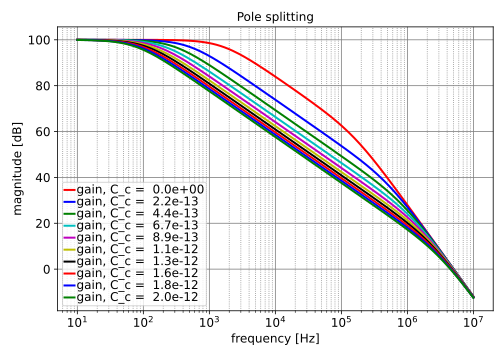

"Pole splitting with opamps"
* file: poleSplitOpamp.cir
* SLiCAP netlist file
V1 1 0 0
R1 1 2 {R_a}
C1 2 0 {C_a}
E1 0 3 2 0 {A_0/(1+s*tau)}
C2 2 3 {C_c}
.param C_c=0
.source V1
.detector V_3
.lgref E1
.end
| RefDes | Nodes | Refs | Model | Param | Symbolic | Numeric |
|---|---|---|---|---|---|---|
| C1 | 2 0 | C | value | $C_{a}$ | $C_{a}$ | |
| vinit | $0$ | $0$ | ||||
| C2 | 2 3 | C | value | $C_{c}$ | $0$ | |
| vinit | $0$ | $0$ | ||||
| E1 | 0 3 2 0 | E | value | $\frac{A_{0}}{s \tau + 1}$ | $\frac{A_{0}}{s \tau + 1.0}$ | |
| R1 | 1 2 | R | value | $R_{a}$ | $R_{a}$ | |
| dcvar | $0$ | $0$ | ||||
| noisetemp | $0$ | $0$ | ||||
| noiseflow | $0$ | $0$ | ||||
| dcvarlot | $0$ | $0$ | ||||
| V1 | 1 0 | V | value | $0$ | $0$ | |
| dc | $0$ | $0$ | ||||
| dcvar | $0$ | $0$ | ||||
| noise | $0$ | $0$ |
| Name | Symbolic | Numeric |
|---|---|---|
| $C_{c}$ | $0$ | $0$ |
| Name |
|---|
| $R_{a}$ |
| $A_{0}$ |
| $C_{a}$ |
| $\tau$ |

Go to Pole-splitting-with-opamps_index
SLiCAP: Symbolic Linear Circuit Analysis Program, Version 2.0.1 © 2009-2024 SLiCAP development team
For documentation, examples, support, updates and courses please visit: analog-electronics.tudelft.nl
Last project update: 2024-10-20 16:56:38